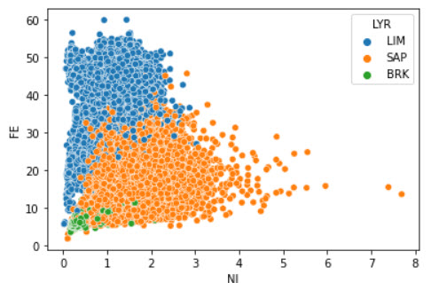
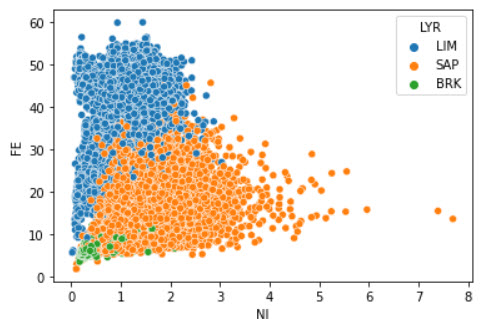

2005 - 2006 I start my career as Junior Resources Geology at PT inco Indonesia Tbk in Mineral Resource Inventory (MRI) section. My task as Junior Resource geology mainly create modeling geology.
The geological blockmodel in PTI using geostatistical method (univariate/multivariate) Ordinary Kriging. GMP software to create the blockmodel is Datamine Studio.
In 2010 - 2013 in Mineral Resources Asessment section my blockmodeling task is peer review the geological blockmodel from MRI section.
Below are some of my works as Modeller/Peer Reviewer Geologist


In 2015-2017 one of my role is Senior Coord. for ERT (Electrical Resistivity Tomography) Geophysical Project. The purposes of this project are to get better picture of subsurface area and to help Mining Production/Reconciliation. In my opinion ERT data also can be used as additional point in implicit modeling (which only need aproximately max 1 day for modeling), so Resources Geologist and Production/Reconciliation Team will get various scenario of our actual blockmodel.
 

After cleaning data, we do EDA to make sure that our data is well interpretated and logic. Although this steps formally do in GMP software, but do it with python will save time to see our general statistical data. Click picture above to my EDA's Jupyter Notebook.
This is my project to fullfill Data Analytics Google Certification Capstone Project, in the Prepare Phase. Click Picture above to see my Cleaning process in R in Jupyter notebook format.
We can speed up the geological blokmodel creation using Pyhton, it will give us auditable each step and learing friendly for new geologist or others. Click the picture above to youtube link demo sample.
Nowadays, we can monitoring and collaborating our project from everywhere, geologist from remote site using mobile, or web, and Management from Head Ofiice using mobile apps, web or desktop. Geologist and analyst will now focus only on interpretation/analyze/improvement rather than spend much time in reporting. Power BI will help us scheduling report, provide real time data, collaborate with others, alert when project meet some criteria (safety alert or overbudget) and even can give us insight and forecast with its latest feature AI and machine learning. Picture above show some example dashboard KPI from Inspection Service, click for demo in youtube video. I will gladly make some example datamodel and dasboard from Mining Industries if you provide me with the data.

Donec eget ex magna. Interdum et malesuada fames ac ante ipsum primis in faucibus. Pellentesque venenatis dolor imperdiet dolor mattis sagittis magna etiam.